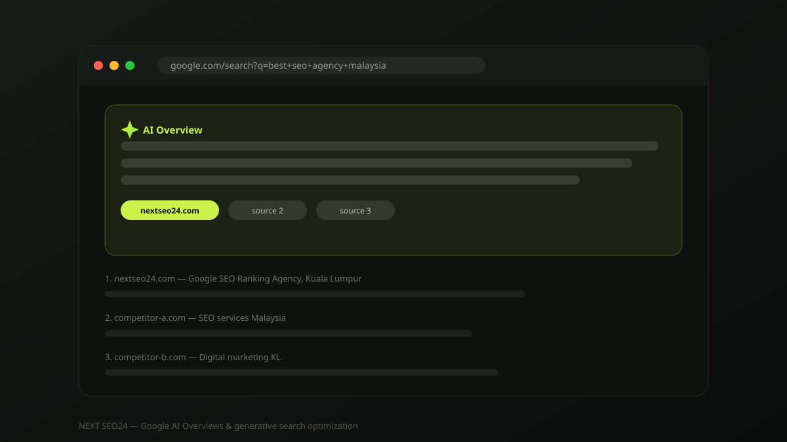

Google AI Overviews in 2026: how to stay visible when AI answers the search
AI Overviews now appear above the traditional results on a large share of Google searches, generating an answer instead of just linking to one. For many businesses this looks like a threat to organic traffic. In practice, it rewards exactly the sites that already do SEO properly — and punishes the ones that don't. Here's what actually changed, and what to do about it.
Since AI Overviews rolled out broadly, we've had the same conversation with clients across Malaysia and Korea repeatedly: "Is SEO even worth doing anymore if Google just answers the question itself?" It's a fair question. The honest answer is that AI Overviews changed how visibility is displayed, not how it's earned. Google's generative answers are still built from the same crawled, indexed, ranked web — they summarise and cite the pages that were already going to rank well. There is no separate, parallel game to learn.
What actually changed on the results page
AI Overviews sit at or near the top of results for many informational and some commercial-investigation queries, pulling together a synthesised answer with citation links to a handful of sources below it. A few practical effects follow from this:
- Zero-click searches increase. Simple factual questions — "what is domain authority", "how long does SEO take" — get answered directly, and fewer people click through for a definitional answer alone.
- Being cited still drives clicks. Sources named in an AI Overview see meaningful click-through from readers who want more detail, proof, or to act on the information — arguably higher-intent traffic than a generic top-10 click.
- Commercial and local searches are largely unaffected. "SEO agency Kuala Lumpur", "best backlink service Malaysia" and similar transactional searches rarely trigger an AI Overview — Google knows these searchers want to compare options and contact a business, not read a summary.
How Google's AI decides what to cite
Google has been explicit that AI Overviews draw from the normal search index and ranking systems built on its helpful, people-first content guidance — there is no separate crawler or algorithm to specifically target. In practice, the pages that get cited share a consistent set of traits:
- Clear, direct answers near the top of the page. Content that states the answer plainly in the first paragraph or two, before going into supporting detail, gets extracted more easily than content that buries the point.
- Structured, well-organised content. Descriptive headings, short paragraphs, lists and tables are easier for an AI system to parse and quote accurately — the same structure that makes content easier for humans to skim.
- Demonstrated expertise and originality. Original data, case studies, first-hand experience and clearly credentialed authorship (E-E-A-T) remain strong signals — generic, reworded content is easy for both Google and AI systems to deprioritise.
- Technical accessibility. Pages must be crawlable and indexable in the first place. Blocking crawlers, slow load times or JavaScript-only content that never renders in a crawl will keep you out of consideration entirely.
A practical playbook for AI-era visibility
- Answer the question in the first 100 words. Lead each page or section with a direct, quotable answer, then expand with detail, examples and nuance afterward.
- Use FAQ and How-To structures where genuinely relevant. Clear question-and-answer formatting, backed by matching schema markup, is exactly the shape AI systems extract most cleanly.
- Publish something no one else has. Original research, real client results, or a genuinely different point of view earns citations that a rewritten "top 10 tips" post never will.
- Keep investing in E-E-A-T. Real author bios, verifiable business information, and a track record of accurate content build the trust signals AI systems are tuned to prefer.
- Don't neglect the commercial pages. Since AI Overviews rarely touch high-intent, transactional searches, your service and pricing pages still need traditional on-page and technical SEO to convert that traffic.
What we're telling our own clients
For Malaysian, Korean and regional Southeast Asian businesses, the practical shift is small: keep doing rigorous SEO, and pay closer attention to how clearly your content answers the actual question a customer is asking. Businesses chasing thin, AI-generated, reworded content will find themselves squeezed from both directions — deprioritised by Google's helpful-content systems and rarely cited in AI Overviews. Businesses publishing genuinely useful, well-structured, original content are seeing AI Overviews become an additional visibility channel, not a threat to the one they already had.
Frequently asked questions
Do AI Overviews reduce website traffic?
For purely informational queries, yes — many searchers get their answer without clicking. But cited sources still see meaningful click-through, and AI Overviews rarely appear on commercial or local intent searches, where most business traffic and leads come from.
Is traditional SEO still worth doing in the age of AI Overviews?
More than ever. Google's AI systems still draw from the same index built by classic SEO fundamentals — crawlability, structured content, authority and E-E-A-T. There is no separate ranking system to game; doing SEO well is what earns citations too.
How do I know if my site is being cited in AI Overviews?
Google Search Console now reports impressions and clicks for AI Overview appearances separately in the Search Results report. Review it alongside your standard organic data to see which queries and pages are being surfaced.
Want your content built to be cited, not skipped?
We audit your top pages against what AI Overviews and Google's core ranking systems actually reward, and show you exactly what to fix first. No obligation.
Chat on WhatsApp →